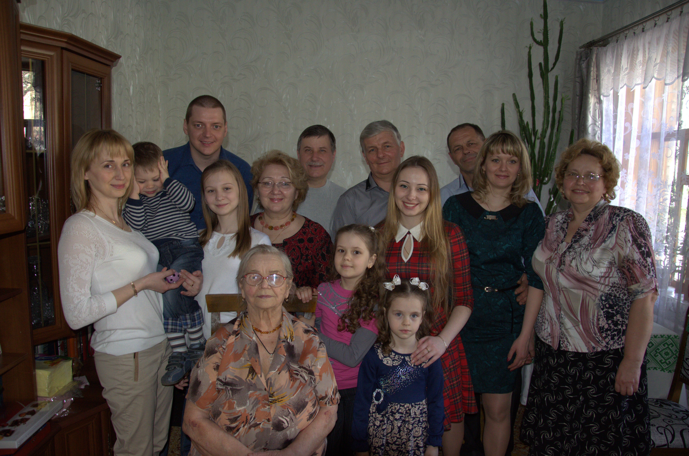

Проект "Моя семья"
Семья – это самые близкие и родные тебе люди, которые выручат и поддержат тебя даже на расстоянии. Когда-то семья называлась ячейкой общества. Доля истины в этом есть, но самая малая. Потому что если кому-то конкретно задать вопрос: что такое семья, то меньше всего человек подумает об этом самом обществе.Перед глазами сразу возникнут родные лица: родителей, жены (мужа), детей. Тех людей, с кем рядом идешь по жизни, о которых заботишься, думаешь, а в трудную минуту сможешь положиться.Одним словом семья это опора, надежный тыл, который нужно беречь и охранять. Как правильно это сделать – рассказываем в этом разделе.